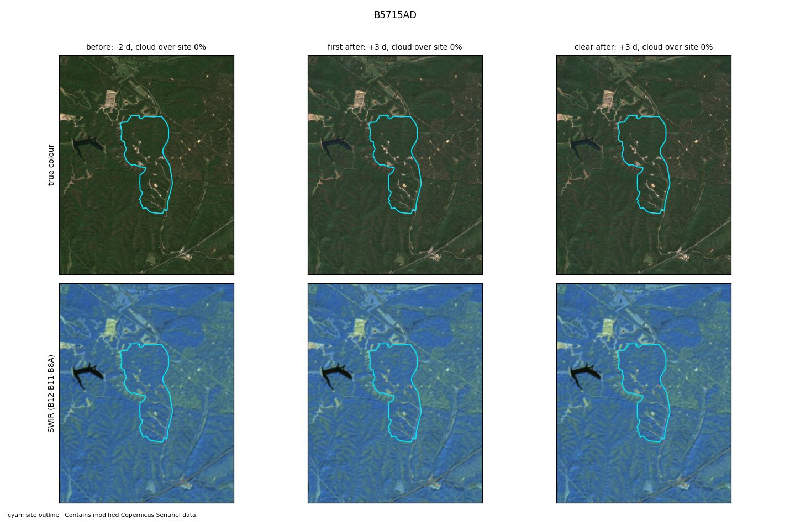
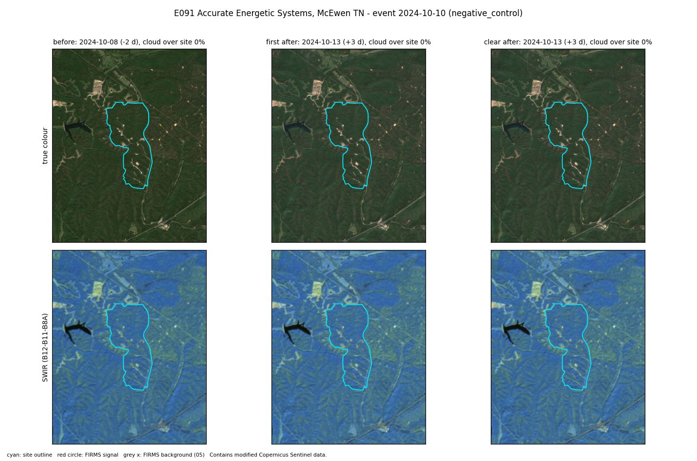

E091 · Control · Calibration half
Accurate Energetic Systems, McEwen TN
Control: the same site on an ordinary day, with no known incident. Any corroboration here is a false alarm.
Site level
Not corroborated
no signal although data were available
City level
Not corroborated
4 satellite passes with heat within 10 km. Expected: 1.17.
Location
- Site point
- 35.92066, -87.65483
- Basis
- OSM way/1437145145 "Accurate Energetic Systems LLC" (reviewed 2026-10-25)
- Uncertainty
- about 1.7 km
- OSM outline
- way/1437145145 "Accurate Energetic Systems LLC"
- City point
- McEwen (GeoNames 4640569): 36.1078, -87.6331
- City to site
- 20.9 km
FIRMS heat detections
- Coverage
- VIIRS_SNPP_SP:2024-10-09+5d
VIIRS_NOAA20_SP:2024-10-09+5d
VIIRS_NOAA21_SP:2024-10-09+5d
MODIS_SP:2024-10-09+5d - Gaps
- none
- At the site
- 0 detections in the 5 days around the event. Usual rate: 0.0 per 5 days.
- After the heat filter
- 0 count as fire (0 new, 0 anomalous). 0 usual heat.
City check
- Verdict
- Not corroborated
- Passes with heat
- 4 within 10 km of the city point, inside the time window
- Expected
- 1.17, from the area's own 30-day baseline (p = 0.0309)
Sentinel-2
- Status
- Clear images before and after.
- Before
- 8 Oct 2024. Cloud over site 0%.
- First after
- 13 Oct 2024 (+3 d). Cloud over site 0%.
- Clear after
- 13 Oct 2024 (+3 d)
- Burn change (dNBR)
- Site minus surroundings: -0.004. 0% of the site above 0.27.
- Blind label
- nothing visible, low confidence
Images


Ground truth and sources
control: no event listed for this date in the site-history sources; absence not independently verified - run a +/-3-day news check
Note: explosives plant; same calendar day ~1 year before/after the event